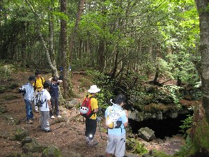
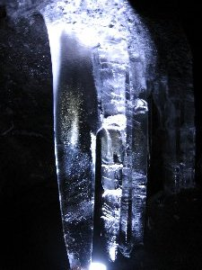
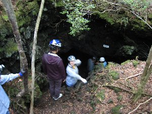
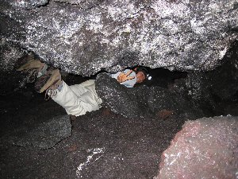

洞窟探検 | 2007年7月 企画者：べっしー |
|---|---|
| 久しぶりに地底の世界を体験したく、精進湖近くの洞窟へ行ってきました。 参加者は8名。半分は洞窟探検が初めての方です。 今回は、観光洞窟では無いけれど、結構メジャーどころで富士風穴に行きました。 富士風穴は車を置いてから比較的近く、道しるべも有るので、迷うことなくたどり着けるし、中が広く氷が張っているとの事だったので、初めての人でも楽しめそうだと考えたからです。 それと天然記念物として登録されているらしいです。 天気は、集合場所の朝霧道の駅にたどり着いた時に土砂降りで、これは無理かな？ って雰囲気が漂っていました。 そりゃ、この雨見ればそう思うよね。 でも、行ってみよう！ と車で移動中に、雨が降っていないエリアに入ったのか、路面も濡れていない状態に。 現地は雨が降った様子も無く良い感じです。 | |
|  右下の窪地が本日の洞窟 |  さ〜て、穴に降りますよ♪ |
| 早速装備を整え出発。 ヘルメットとヘッドランプ、濡れても良い靴（滑らない靴）、汚れても良い服。 富士風穴は、巨大なくぼ地に、横穴が開いている状態で、くぼ地に降りる時点でひんやりとした空気に包まれます。 洞窟入口にはハシゴが掛けてあり、そこから巨大な穴へ降りていきます。 中は涼しいを通り越し、寒い感じです。 それもそのはず、至る所に氷があり、しばらく歩くと床一面に、氷が張っているのですから。 広さは、人が立って歩いても頭をぶつけず、横巾も広く、下一面氷なので、どこぞのスケートリンク場の様です。 実際滑りまくりで、気を抜くとひっくり返って頭を打ちそうです。（実際、打った人がいます） | |
 この洞窟は横は広いが、低い箇所があります |  下はご覧の通り氷です。 |
| 氷柱が所々にあり、ヘッドライトの明かりを当てると、すごい綺麗に光ります。 奥に進むと床が斜めになっており、一度奥側に滑ると、床がつるつる滑って登ってくるのが大変です。 ネット情報ではアイゼン必須と有ったのは、ここの事でしょう。 しかし、「アイゼンで氷を傷つけるのは・・・・」と言う情報も貰っていたので、アイゼン持参していません。確かに天然記念物なのだから、なるべく自然状態が望ましく、傷を付けるのはもってのほか！ 僕らも滑って転びながらも、傷や異物を残さないようにしました。 | |
|  幻想的なツララ |  ツララもう一枚 |
| 地底世界を堪能して、温かい地上で昼食を取り、もう一つくらい行こうと行ってみたのですが、メガネ穴（垂直穴で進入無理）、大室洞穴（入口崩壊）、と中々探検出来ず、以前行った事も有る背負子風穴へ行ってみました。 | |
 メガネ穴 穴はデカイが |  背負子風穴入り口です |
| 背負子風穴は富士風穴に比べ狭く、屈んで進まなければならないほどの、まさに穴と言う感じですが、コレもまた探検雰囲気が出ていて良い所です。 以前来た時は、岩肌がもっとドライと言うイメージが有りましたが、雨の後なのか湿っていて水滴まで落ちていました。 入口から左右に二つの洞窟が有ったと記憶してますが、左の洞窟は崩落しているのか有りません。 （進入口別に有った？） | |
 背負子風穴内部 狭いです |  さらに奥へと這いずる戦士 |
| 結局二つ止まりとなりましたが、結構楽しかったです。一年に一回位やりたくなるイベントですね。 どなたか、面白く初心者でも簡単な洞窟有りましたら、教えて下さい。 | |
| コメント＆写真 ｂｙ べっしー | |